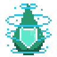
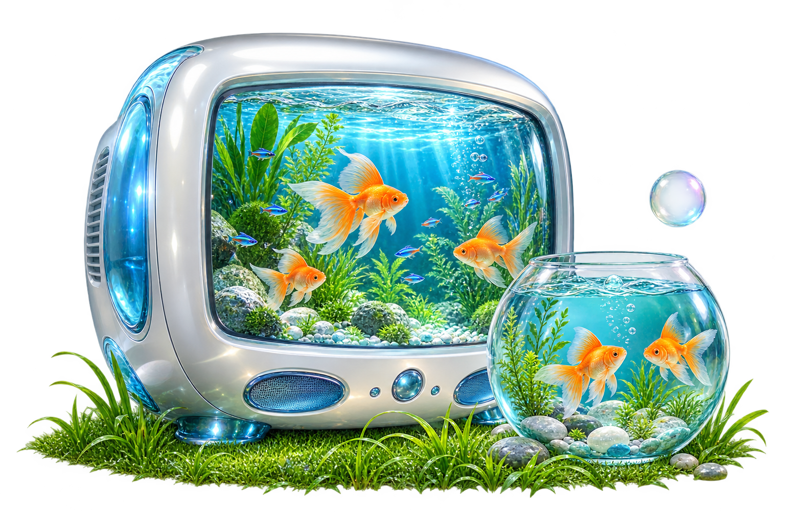
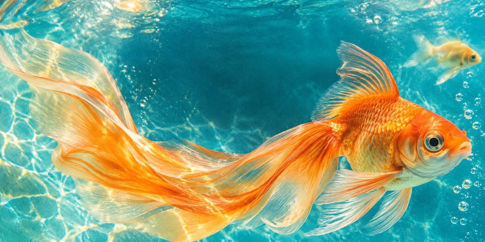

Clearflow
Not Just Groovy
Zdeněk Gromnica / FutureMillennium. Used for the wordmark and display headings. CC BY-NC-ND 3.0: attribution, noncommercial use and no changes to the font.

clearflowBack to website ←PROJECT CREDITS
Asset provenance for the supplied references, generated artwork and custom interface work used in Clearflow.
Zdeněk Gromnica / FutureMillennium. Used for the wordmark and display headings. CC BY-NC-ND 3.0: attribution, noncommercial use and no changes to the font.
burntilldead. Used in the shaded ribbon. The supplied Outline file is a demo font.
Designed by Rodrigo Fuenzalida with direction from Jordan Egstad, JD Hooge and Jack De Caluwé for Instrument. Regular and italic files retained from the earlier typography version. SIL Open Font License 1.1.
Body copy uses device-provided fonts, which aren’t redistributed here. Segoe UI is supplied by Microsoft (the Segoe family was designed by Steve Matteson); Arial is by Robin Nicholas and Patricia Saunders / Monotype; Georgia is by Matthew Carter. Segoe UI source · Arial source · Georgia source.

Generated with OpenAI Imagegen during Clearflow development

Generated with OpenAI Imagegen during Clearflow development
# Imagegen prompts Built-in Imagegen tool; generated assets saved into `dist/assets/`. ## aquarium-tv.png Use case: stylized-concept. Asset type: website hero artwork. Primary request: polished Frutiger Aero mid-2000s optimistic eco technology 3D still life. A large pearlescent white and silver rounded retro CRT television WITHOUT antennas, its screen a luminous blue aquarium with several orange goldfish and tiny neon blue tropical fish, submerged aquatic plants and sparkling clear water. A separate round glass fish bowl in front at the lower right containing two realistic orange goldfish, clear turquoise water and smooth stones. A small vivid green cluster of grass blades along the bottom. One delicate transparent floating bubble. Isolated entire scene centered, front view slightly from above, all objects fully visible, no cropping. Glossy glass, translucent blue acrylic accents, soft bright studio lighting, clean tasteful mid-2000s product advertising render, realistic refractions and material detail, charming but not cartoon. Plenty of negative space around silhouette. Actual transparent background, no backdrop, no text, no letters, no logo, no watermark. Wide 3:2 composition. ## goldfish-banner.png Use case: stylized-concept. Asset type: wide website editorial banner background. Primary request: expressive close-up of a graceful orange goldfish swimming through clear turquoise blue water, Frutiger Aero aquatic optimism with a tactile printed editorial texture. Wide 2:1 composition, fish orange translucent tail sweeping across the left side and its body and eye toward the right, another smaller pale yellow fish distant upper right, a few tiny natural bubbles. Cyan teal blue background, luminous vivid orange and golden fins. Fine analog film grain and subtle halftone texture, slightly retro digitally printed photographic collage mood, not cartoon. A calm darker teal area near the center for overlaying a headline in HTML. Full bleed, no borders, no typography, no words, no UI, no logos, no watermark.
The two generated illustrations were made with OpenAI Imagegen during the project. Download the recorded image prompts. The supplied pixel logo is unchanged; its original creator and licence weren’t identified in the provided file.
These eight source files came from the aquarium example supplied for this project. The layered scene and physical switch were adapted for this website.
Catbox hosts the linked files. The original image creator and reuse licence weren’t provided, so no artist attribution or permission is claimed here.

Original creator not identified in the supplied aquarium example

Original creator not identified in the supplied aquarium example

Original creator not identified in the supplied aquarium example

Original creator not identified in the supplied aquarium example

Original creator not identified in the supplied aquarium example

Original creator not identified in the supplied aquarium example

Original creator not identified in the supplied aquarium example

Original creator not identified in the supplied aquarium example
The CSS fish bowls, grass, bubbles, TV housings, drain/pin/folder illustrations, SVG butterflies and performance icon were developed for Clearflow through iterative work with Codex. The report form and motion effects are custom project code.
Both cues were synthesized locally for this project.
The original template’s water image is retained as template-water.png, from Frutiger Aero Website.zip → src/assets/aero-water-background.png. Creator and licence were not supplied. The earlier vector favicon was drawn for this project; the current favicon uses the supplied DropLogo.png.
From the supplied GSAP-master.zip. Used for the intro, straight butterfly flight, card hover/breathing, FAQ dropdowns and section reveals.
From the supplied liquid-glass-js-main.zip. Used for selected glass surfaces, with a custom adapter for this site. MIT licence.
Version 1.4.1. Used for glass background sampling. MIT licence.
The supplied Frutiger Aero Website.zip was the starting template. The supplied aquarium example, typeface-site screenshot and translucent turquoise controller-case reference informed later revisions; the screenshots themselves aren’t displayed in the site.
Font authors and licences checked against supplied files and their linked listings on 10 October 2026. A source link records provenance; it does not establish permission to reuse an asset whose licence is unknown.